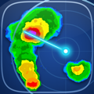

NOAA Weather Unofficial · National Weather Service
Wind Advisory
Gusts to 45 mph through 11 PM

NOAA Weather UnofficialNATIONAL WEATHER SERVICE
LIVE
Fetching from api.weather.gov…
Radar, Satellite & Lightning
NWS RADAR · RIDGE2
LIVE
Pull to refresh
--:--
Light
Heavy
100%
100%
Radar: NOAA/NWS RIDGE2 · api.weather.gov · OSM
NWS Alerts
LIVE
api.weather.gov
Loading NWS alerts…
RECENT ALERTS
Settings
PUSH NOTIFICATIONS
Enable alerts
Watches, warnings & advisories · background push
Check interval
In-app refresh · background push always active
MINIMUM SEVERITY
Applies to other NWS alerts. Watches, warnings, advisories and statements always notify.
UNITS
🌡 Temperature
💨 Wind speed
👁 Visibility
❄️ Snow level alert
QUIET HOURS
Enable quiet hours
Mute non-critical alerts
Quiet period
10:00 PM – 7:00 AM
–
Override for Warnings
Always notify for warnings & extreme events
HOW ALERTS ARE SENT
- You get one notification when the NWS issues an alert for your area.
- The NWS reissues active alerts every few hours. A reissue with no changes won’t notify you again.
- You’ll be notified again if a warning becomes more dangerous (a tornado is observed, the damage threat goes up, or it becomes an emergency), or if a warning or watch is extended.
- Advisories and statements don’t notify again when they’re extended. The Alerts tab always shows the latest version.
DAY AHEAD
Day ahead
Daily forecast summary notification
Delivery time
7:00 AM
🔧 Developer
HOME SCREEN
Add Weather Widget
Long-press home screen → + → search "NOAA Weather Unofficial"
ABOUT & LEGAL
NOAA Weather Unofficial
Version 1.21.0 · © 2025–2026 nelsok
Data Sources
🌐 NWS / NOAA — api.weather.gov · Public domain
📡 NOAA RIDGE2 — NEXRAD radar · opengeo.ncep.noaa.gov
🛰 NASA GIBS — GOES-East satellite · gibs.earthdata.nasa.gov
🗺 OpenStreetMap — Map tiles & geocoding · © contributors (ODbL)
📍 Photon — Address & place search · photon.komoot.io (OSM)
🌊 NOAA CO-OPS — Tide predictions · tidesandcurrents.noaa.gov
📊 ACIS / Regional Climate Centers — Daily climate history for rainfall streaks (data.rcc-acis.org)
〰️ Open-Meteo — Location search (GeoNames, CC-BY 4.0), marine (NOAA WaveWatch III), modeled air quality & the long-range outlook (GFS, days 8–14; temperatures converted to your selected unit)
☀️ EPA — UV index · data.epa.gov
🍃 EPA AirNow — Air quality · with NOAA, NPS & state/local agencies
📮 US Census — ZIP geocoding · geocoding.geo.census.gov
🔔 Alert relay — Background push · noaa-alert-relay (Cloudflare Worker)
🍃 Leaflet v1.9.4 · © Vladimir Agafonkin · BSD 2-Clause
⚠️ UNOFFICIAL · NOT AFFILIATED WITH NOAA OR NWS
Independent third-party app. Not created, endorsed, or sponsored by NOAA, the National Weather Service, or any U.S. government agency. Data provided "as-is" without warranty and may be delayed or unavailable. For life-threatening weather, always confirm at weather.gov or with local officials before acting.
NWS icons © National Weather Service · Map data © OpenStreetMap contributors, available under the Open Database License (ODbL). OpenStreetMap® is a trademark of the OpenStreetMap Foundation.
Saved Locations
SAVED LOCATIONS
NEXT 24 HOURS · api.weather.gov
Loading hourly forecast…
7-DAY FORECAST · CONDITIONS · MARINE
Loading forecast…
Loading conditions…
Loading marine conditions…
AIR QUALITY · EPA AIRNOW
Loading air quality…
UV INDEX · EPA ENVIROFACTS
Loading UV index…
STORM CENTER · SPC & NWS TEXT PRODUCTS
LIVE
Loading Storm Center…